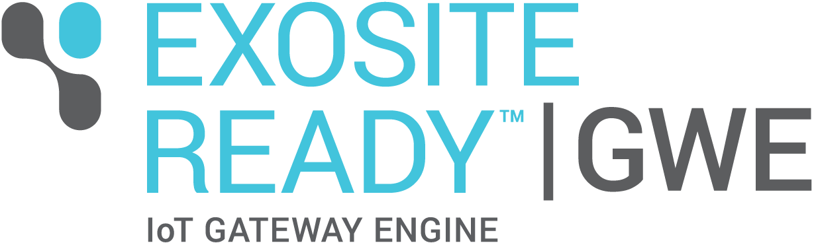

ExositeReady™ Gateway Engine

ExositeReady™ Gateway Engine (GWE) was created by Exosite to service a commonly occurring design pattern in IoT applications. This page provides information about what GWE does and does not do, as well as a list of the terms used and the additional resources available.
Resources
- Getting Started
- Product Overview
- Release Packages
- Custom Gateway Applications
- Over the Air Updates
- GWE Solution App
- Device Client - Docs
- GWE - Docs
- Gateway Message Queuing - Docs
About GWE
What is a Gateway?
In the context of IoT, a "gateway" can be loosely defined as any device that serves as a communication broker for other devices. Gateways, in this context, often bridge the gap between an IoT platform (Exosite) and some collection of devices that do not possess the ability of communicating on the Internet. Sometimes the "devices" generating the data you want on the Internet are not devices, per se, but data from other networks the gateway can access such as modbus and CAN. Either way, the purpose of any gateway is to move local data to an external agent on the Internet.
Since using gateways is common throughout so many industrial applications, Exosite created GWE as an out-of-the-box developer and deployment tool for Internet-connected gateways.
What GWE Does
- It is the product that installs and modifies software over the air in a secure and scalable manner.
- It is an application-hosting framework for Custom Gateway Applications.
- It provides an Exosite API library in Python called
device-client. - It is integrated with Supervisor to manage your Custom Gateway Applications' runtime environment.
What GWE Does Not Do
- It does not read any sensor data.
- It does not auto-discover any connected nodes or sensors and automatically send data.
- It does not know what a Custom Gateway Application does.
Notational Conventions
As mentioned in the HTTP Device API, this document follows some notational conventions:
- Any JSON is pretty printed for clarity. The extra whitespace is not necessarily included in any commands.
- Comments (e.g.
#,//) are occasionally included in example code, runnable commands and JSON to give hints or provide detail. These comments are not necessary (and sometimes error-prone) in actual example code, commands, requests, and responses. - A name in angle brackets (e.g.,
<pid>,<myvar>) is a placeholder that will be defined elsewhere. - Code blocks are distinguished by command and example headings where commands can be copy-pasted into terminals, whereas examples are samples of terminal output when running the commands.
Terminology
| Term | Definition |
|---|---|
| CIK | An acronym for Client Interface Key. The CIK is the authorization for operations like reading and writing data to and from dataports, creating new clients, dataports, and scripts, and even dropping (a.k.a. deleting) the client. |
| Custom Gateway Application | This is the application you (the developer) develop as your IoT solution. It is the application GWE hosts on your gateway(s). |
| GWE | A short-hand way of saying "Gateway Engine", a Python framework for creating Custom Gateway Applications on Linux gateways. |
"GatewayEngine" |
The Python package in the GWE framework developed and maintained by Exosite. This Python package contains the main algorithms for application versioning and OTAU. |
| Vendor | An Exosite One Platform term that refers to an account name. This is a legacy term that has been replaced by the term Product. |
| Model | An Exosite One Platform term that refers to the resources of a client. Both Model and Vendor are terms replaced by the single term Product. |
| OTAU | An acronym for Over the Air Update. This is the mechanism that enables software and firmware updates over Internet connections. |
| tarball | A type of compressed file that contains other files, directories, and even other tarballs. |
| spec file | A "spec" file is a YAML file that describes the resources of a Murano Product. The GWE spec file is available in the release tarball and can be found at gateway-engine/specs. |